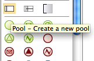

Add a new pool to a diagram.
In Bonita Studio, go to the Design palette to the left of the whiteboard.
Click and drag the pool icon onto the whiteboard above or below the existing pool. A new pool will be created above or below the existing pool.